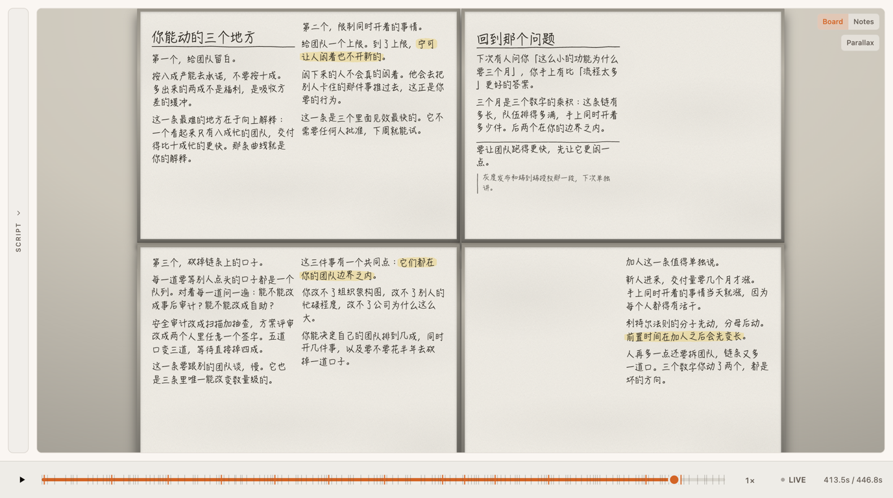

# 一个小功能，为什么要三个月 — plan @board 4 · ~10 min 听众：刚带团队的技术主管。要的不是吐槽，是三个他明天就能动的数字。 Q 两天的活，为什么在日历上走了三个月？ A 时间不花在做上，花在等上；等的长度由队列的忙碌程度和在制数量决定，这两个数字在你手上。 | # | 内容 | medium | room | len | |---|---|---|---|---| | 1 | 记一笔账：动手 5 天，等 58 天 | prose | b1 `@at left`（标题也在这一列） | ~90s | | 2 | 58 天散在链条的每个接口上 | FIGURE graph | b1 `@at right` | ~100s | | 3 | 等待从哪来：队列，$W \propto \rho/(1-\rho)$ | formula | b2 `@at left` | ~70s | | 4 | 忙碌程度→等待倍数的曲线 | FIGURE chart | b2 `@at right` | ~80s | | 5 | 利特尔法则：在制数量决定前置时间 | formula + worked example | b3 `@at left` | ~110s | | 6 | 三个常见处方，当场划掉 | prose（`~~…~~`） | b3 `@at right` | ~80s | | 7 | 三个杠杆 + 收束 | prose + list | b4 `@at full` | ~100s |
> revised（b1 写满之后）：一整块板（两栏、含标题和一张图）= 41.6 秒，约 280 字。 > 一栏 ≈ 20 秒。四块板的墙一轮只有 170 秒。十分钟需要三轮左右，所以擦板重用是 > 这堂课的结构，不是补救。下面是按栏排的完整走位。
| 板·栏 | 内容 | medium | |---|---|---| | b1 左 | 账单：动手 5 天，等 58 天 ✓ | prose | | b1 右 | 链条图 + 流动效率 8% ✓ | FIGURE | | b2 左 | 队为什么这么长：$W \propto \rho/(1-\rho)$ | formula | | b2 右 | 忙碌程度→等待倍数的曲线 | FIGURE | | b3 左 | 曲线为什么会立起来：方差是队列的燃料 | prose | | b3 右 | 团队为什么被排在右端：空闲看起来像浪费 | prose | | b4 左 | 利特尔法则 $W = L/\lambda$ | formula | | b4 右 | 12 个需求的推演：六周 vs 两周 | worked example | | — | 擦掉 b1（账单已讲完） | `@erase` ×2 | | b1 左 | 在制为什么自己会涨：一堵就再开一个 | prose |
